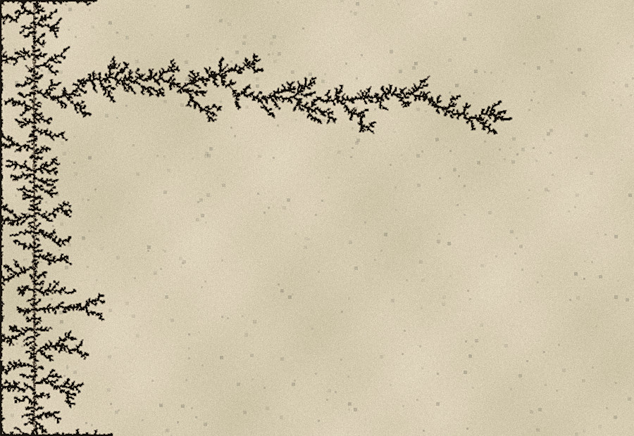

The fern that never grew
Some limestones and sandstones carry what looks like a pressed fern. People put them in the fossil drawer. They are not ferns.
The black is a manganese oxide, grown from water moving through a crack or along a bedding plane. The branches have no veins and no leaves. They strike out from a line, not from a stalk, and they do not fold over one another the way a buried frond would. Museums file them under pseudofossils, which is the right drawer.
For a long time the mineral was listed as pyrolusite. When Potter and Rossman finally checked, with infrared instead of a guess, they did not find a single pyrolusite dendrite. Surface ones were romanechite, or a mineral in the hollandite group. You cannot tell which by looking at the shape.
The part I like is the direction. Van Straaten, writing about the Solnhofen Limestone in 1978, described tree-shaped dendrites on a bedding plane growing away from the joint, with the metal supplied from the opposite side. The drawing advances one way; the material arrives from the other. Once the outline is there, more of the same supply thickens the stems and coarsens the texture, but the tree does not get any larger.
Branching, in that account, is what you get when the ions have to travel through a film of micropores. A solid blob would leave them with further to walk.

I grew that cartoon on my own computer. It is not van Straaten's micropore film, and it has no chemistry of its own. The model code is here.
Sources: L.M.J.U. van Straaten (1978), "Dendrites", Journal of the Geological Society 135, 137–151, doi:10.1144/gsjgs.135.1.0137 (I have the abstract, not the full paper) · R.M. Potter & G.R. Rossman (1979), "Mineralogy of manganese dendrites and coatings", American Mineralogist 64, 1219–1226, PDF · Mark A. Wilson, Wooster Geologists, 20 January 2013 · Queensland Museum, Pseudofossils fact sheet · Museums Victoria, "Pseudofossils: Concretions and dendrites."